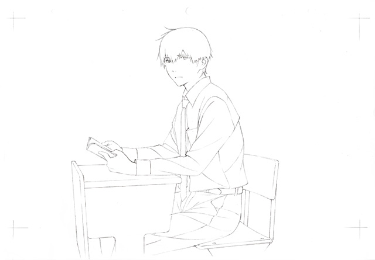

- 原作を既読の方なら「そうそう、【僕】ってこういう感じだよね」、未読の方でも「あ、【桜良】ってこういう女の子なのかな」と、キャラクター達を一目見た瞬間に、彼らの人となりがわかるような明確な個性を持ったデザインを心掛けました。「リアリティ」を損なうような「いかにもアニメ的」な誇張は避けつつも、キャラの性格を明確に表現できる記号にデザインを落とし込む事に注力しました。
- 総作画監督という立場上、完成するまでには何度も何度も映像をチェックするのですが、カットの並びはバラバラで、「音無し」の状態で見ることが大半です。制作の終盤でようやく、ひとつに繋がった「声・音楽あり」の状態でチェックするのですが、音無しで見ていた時とは比べものにならない位の感動で、何度見てもチェックのたびに涙ぐんでいました（笑）改めて「映像」というものの力に驚かされました。その感動を皆様にも味わってもらえれば、幸いです。
- 

岡勇一
神奈川県出身。多彩な作品を手がけるアニメーター・イラストレーター。「OVER DRIVE（2007）」キャラクターデザイン・総作画監督、「To LOVEる -とらぶる-（2008～）」シリーズ キャラクターデザイン・総作画監督、「エロマンガ先生（2017）」総作画監督などを担当。劇場アニメ「君の膵臓をたべたい」では原作のエッセンスを生かした映像制作に尽力している。